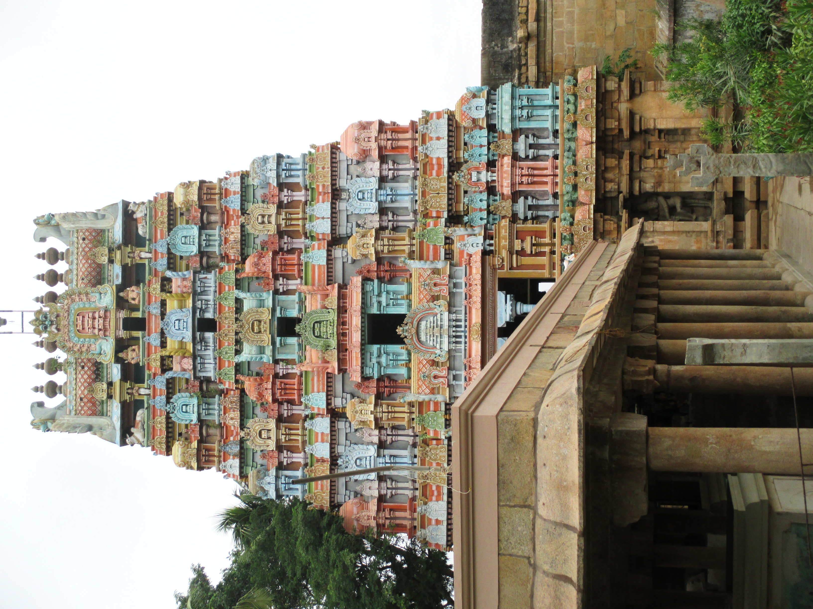
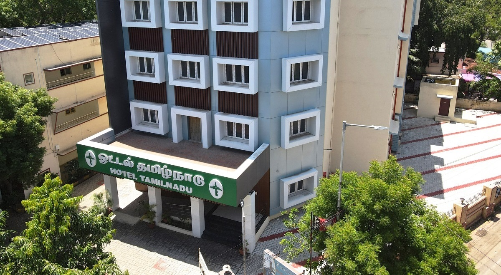

Trichy, also known as Tiruchirappalli, is a vibrant district located in the Indian state of Tamil Nadu. It is famous for its historical significance, architectural marvels, and cultural heritage.
The district is home to several iconic landmarks, including the famous Rockfort Temple. Built on a massive rock, the temple complex offers breathtaking views of the city and houses ancient cave temples dedicated to Lord Shiva. It is a popular pilgrimage site and attracts devotees from all over the country.
Thiruvanaikaval Temple, located on an island in the Cauvery River, is another prominent religious site in Trichy. It is one of the Pancha Bhoota Stalas (five elements temples) dedicated to Lord Shiva and represents the element of water. The temple's architecture and serene ambiance make it a must-visit for spiritual seekers and architecture enthusiasts.

Kallanai Dam, also known as Grand Anicut, is an ancient dam built across the Cauvery River. It is one of the oldest water-diversion structures in the world and has been providing irrigation water to the region for centuries. The dam is a marvel of engineering and attracts tourists interested in history and irrigation systems.

Sri Ranganathaswamy Temple, located on Srirangam Island, is a renowned Hindu temple dedicated to Lord Vishnu. It is one of the largest functioning temple complexes in the world and showcases exquisite Dravidian architecture. The temple's annual festival, Vaikunta Ekadasi, is a major event that draws devotees and tourists alike.
Accommodation Facilities
Hotel Tamilnadu
Experience luxury and comfort at Hotel Tamilnadu, located in the heart of the city. The hotel offers top-notch amenities and services to make your stay memorable. With its convenient location, you'll have easy access to various attractions in Trichy.
Trichy district offers a wide range of accommodation options, including luxury hotels, budget-friendly guesthouses, and homestays. Whether you're visiting for business or leisure, you'll find suitable options to make your stay in Trichy enjoyable.